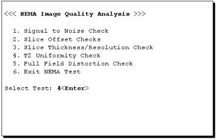
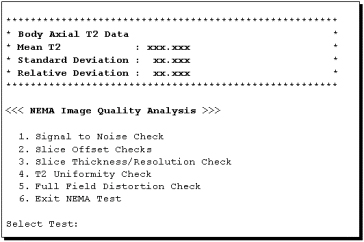

Operating Documentation
Direction 5133315-3, Rev# 14
Signa EXCITE HD 1.5T Service Methods
Module Version 1.0, Version Date 5/3/07
Operating Documentation |
| Required Persons | Preliminary Reqs | Procedure | Finalization |
|---|---|---|---|
| 1 | Not Applicable | Not Applicable | Not Applicable |
For image analysis, the operator specifies the first image from a spin echo scan. All the images in the echo are retrieved and a T2 reconstruction is performed to generate a resultant image. In the resultant image, each pixel represents the T2 at that point in the phantom. The center of the resultant image is determined to position an ROI and the mean T2 value, standard deviation, and relative deviation are estimated and reported.
Select [Image Quality], under [Cal/Checks] on the Service Desktop, then click on [Start].
For TwinSpeed, highlight the same GradMode as was used in T2 Uniformity Checks Body Scans, then click on [OK].
A NEMA Image Quality window will appear on the desktop, as shown in Illustration 1. At the Select Test prompt, type 4<Enter> for the T2 Uniformity Check.
Illustration 1: NEMA IMAGE QUALITY MENU

Enter the image exam, series, and the first of the four image numbers.
Analysis then begins. The final values are displayed on the screen as shown in Illustration 2.
Illustration 2: T2 UNIFORMITY RESULTS SCREEN

Record the Mean T2, Standard Deviation, and Relative Deviation in Data Sheet (T2 Uniformity Data Sheet).
Repeat Step 3 through 6 above, for analysis of the remaining series.
Type 6 then press <Enter> to exit the NEMA IQ Analysis Menu.
No finalization steps.